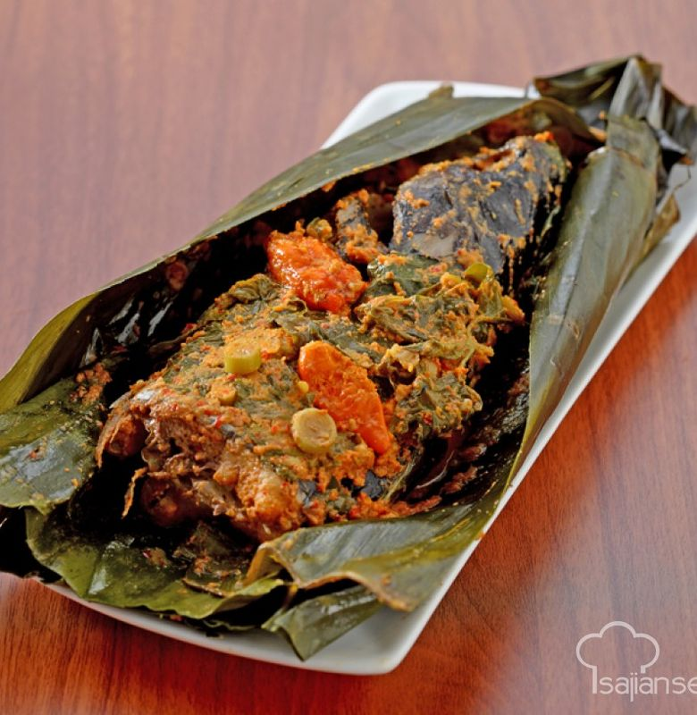
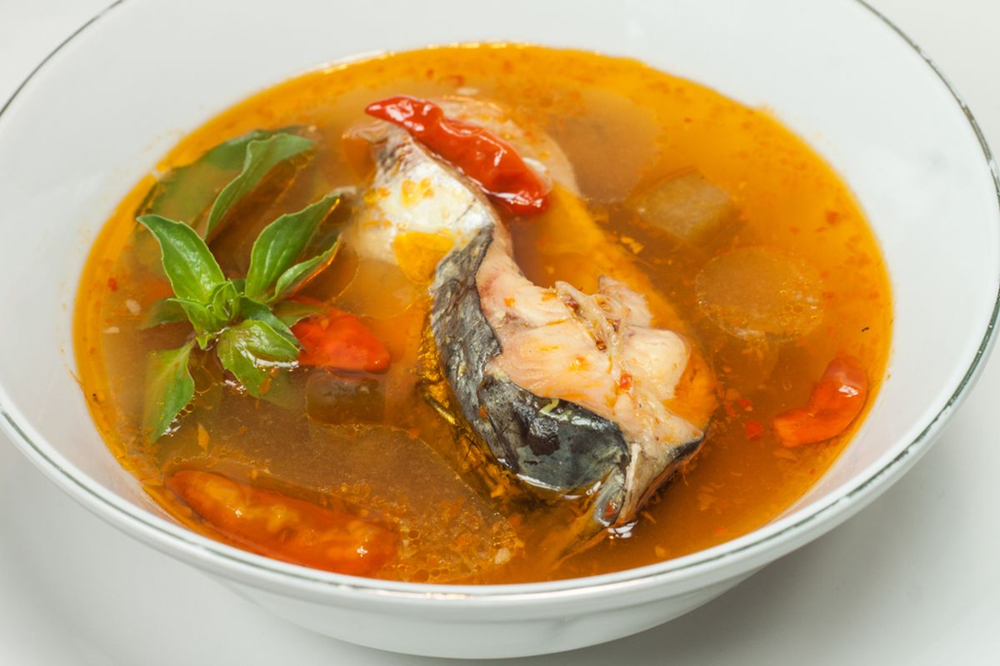
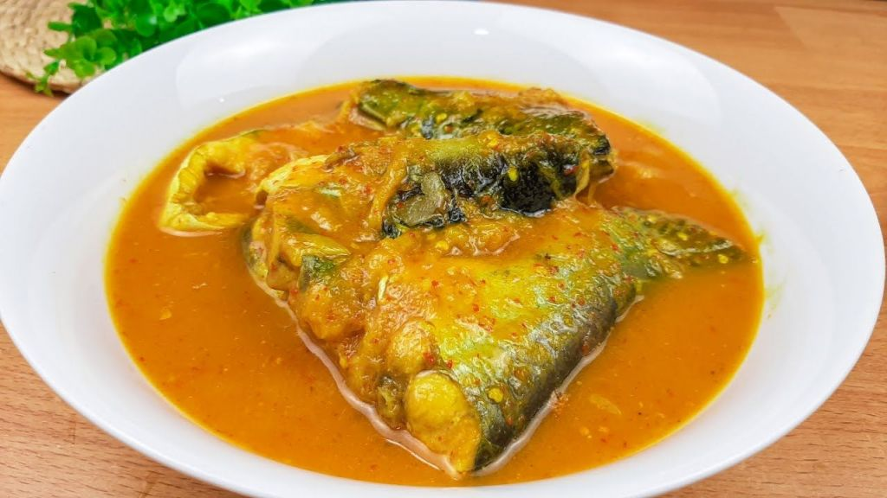
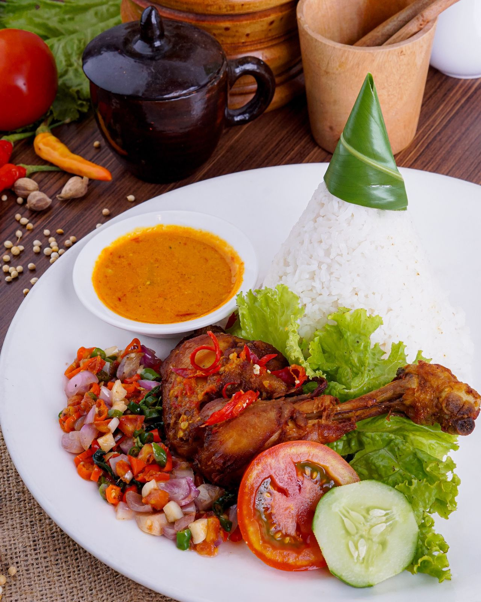
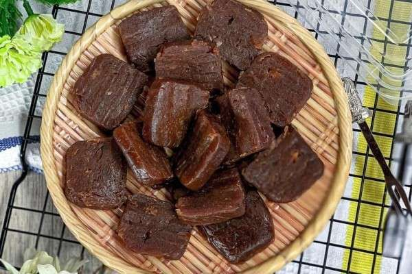
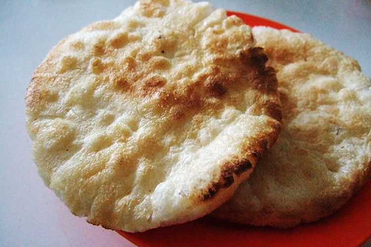

Makanan Khas Bengkulu
Makanan khas Bengkulu memiliki cita rasa yang kaya dan unik, dipengaruhi oleh kekayaan budaya serta keanekaragaman bahan-bahan lokal. Salah satu pembuka atau hidangan pembuka yang populer di Bengkulu adalah *Pendap*. Ini adalah hidangan berbahan dasar ikan yang dibungkus dengan daun pisang, kemudian dibumbui dengan rempah-rempah seperti kunyit, cabai, dan bawang putih, lalu dibakar hingga matang. Selain itu, *Pindang Patin* yang segar dan berkuah asam juga sering menjadi pilihan awal dalam hidangan khas daerah ini. Kelezatan makanan pembuka ini mencerminkan keunikan rasa yang menyegarkan, pedas, dan gurih yang sangat khas dari Bengkulu.
backMakanan khas Bengkulu memiliki kekayaan cita rasa yang dipengaruhi oleh kondisi alam dan kebudayaan setempat, serta adanya interaksi dengan berbagai budaya dari luar. Beberapa hidangan khas yang menggambarkan kekayaan kuliner Bengkulu antara lain:
1. **Pendap**
Pendap adalah salah satu hidangan khas yang terkenal di Bengkulu. Terbuat dari ikan (biasanya ikan patin atau ikan laut lainnya) yang dibumbui dengan rempah-rempah seperti kunyit, cabai, bawang merah, bawang putih, dan asam jawa. Ikan yang sudah dibumbui ini dibungkus dengan daun pisang, lalu dibakar hingga matang. Proses pembakaran memberikan rasa yang khas, dengan perpaduan rasa pedas, asam, dan gurih. Pendap sering disajikan sebagai lauk pendamping nasi.
2. **Pindang Patin**
Pindang Patin adalah hidangan sup ikan khas yang sangat populer di Bengkulu. Ikan patin segar dimasak dengan kuah asam yang khas, biasanya menggunakan asam jawa atau belimbing wuluh untuk memberikan rasa asam yang segar. Hidangan ini juga dibumbui dengan rempah-rempah seperti kunyit, serai, daun salam, dan cabai, menciptakan perpaduan rasa gurih, pedas, dan asam yang menyegarkan.
3. **Tempoyak**
Tempoyak adalah salah satu bahan makanan khas Bengkulu yang terbuat dari durian yang difermentasi. Rasanya cukup khas, asam dan sedikit pahit, namun sangat lezat bila dimasak dengan berbagai bahan lain. Tempoyak biasanya dimasak dengan ikan atau dijadikan bumbu untuk sambal. Salah satu hidangan terkenal yang menggunakan tempoyak adalah *Tempoyak Ikan Patin*, di mana tempoyak digunakan untuk memberikan rasa gurih dan sedikit asam pada ikan patin.
4. **Nasi Rames Bengkulu**
Nasi Rames adalah nasi yang disajikan dengan berbagai lauk pauk seperti ikan bakar, telur dadar, sayur, sambal, dan tempe. Hidangan ini mencerminkan kekayaan rasa pedas dan gurih yang khas dari masakan Bengkulu. Biasanya, nasi rames dimakan sebagai hidangan lengkap dengan campuran sayuran dan lauk yang melengkapi satu sama lain.
5. **Lempuk Durian**
Lempuk durian adalah hidangan manis khas Bengkulu yang terbuat dari durian yang dikukus dan dicampur dengan gula. Teksturnya kental dan agak lengket, serta memiliki rasa durian yang sangat kuat. Lempuk durian sering dijadikan oleh-oleh khas Bengkulu dan sangat digemari oleh pengunjung yang ingin mencicipi kelezatan durian dalam bentuk yang berbeda.
6. **Kerupuk Kemplang**
Kerupuk kemplang adalah makanan ringan khas Bengkulu yang terbuat dari ikan atau udang yang dicampur dengan tepung sagu. Setelah adonan dicetak dan dibentuk, kerupuk ini kemudian digoreng hingga garing. Rasanya gurih dan renyah, cocok sebagai camilan atau pendamping nasi. Kerupuk kemplang juga sering dijadikan oleh-oleh bagi wisatawan yang datang ke Bengkulu.
Keunikan kuliner Bengkulu terletak pada penggunaan rempah-rempah lokal, bahan-bahan segar dari laut dan darat, serta cara memasak yang menjaga kekayaan cita rasa alami. Setiap hidangan tidak hanya menggugah selera tetapi juga mencerminkan sejarah dan budaya masyarakat Bengkulu yang kaya dan beragam.


.jpg)